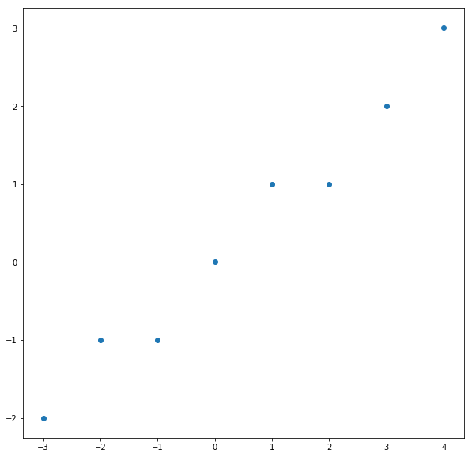
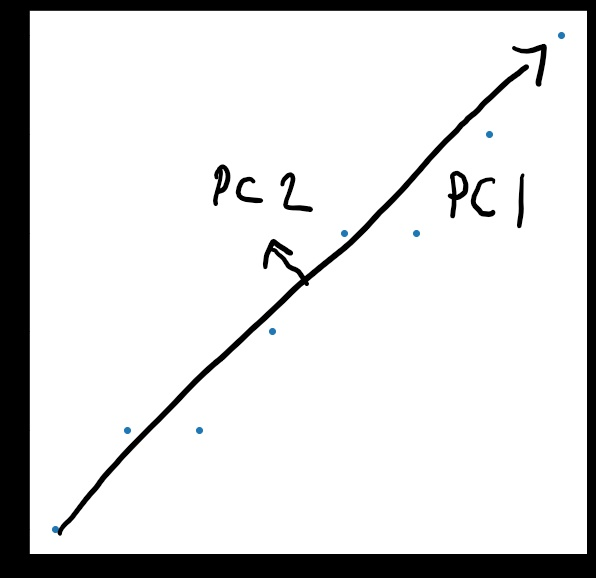
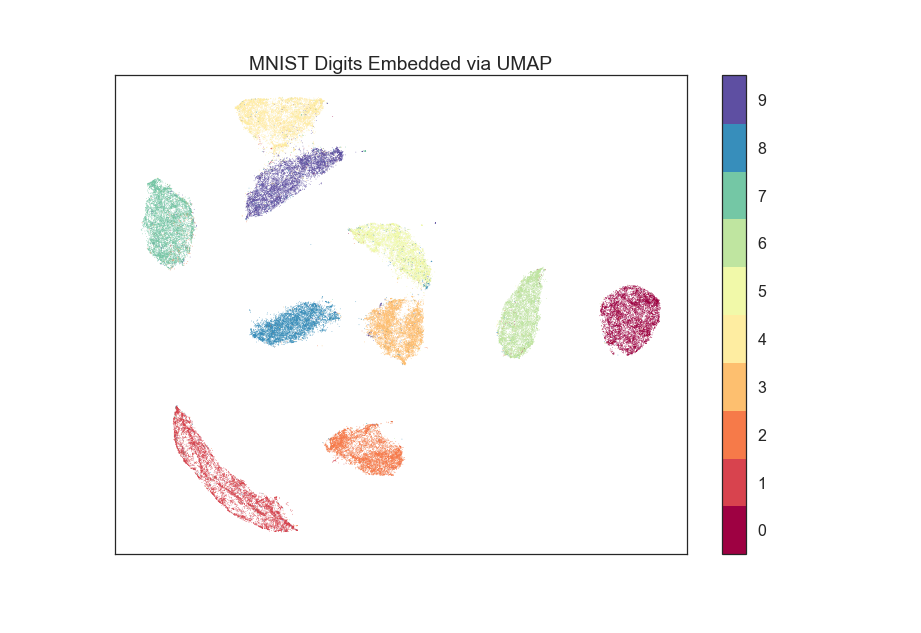
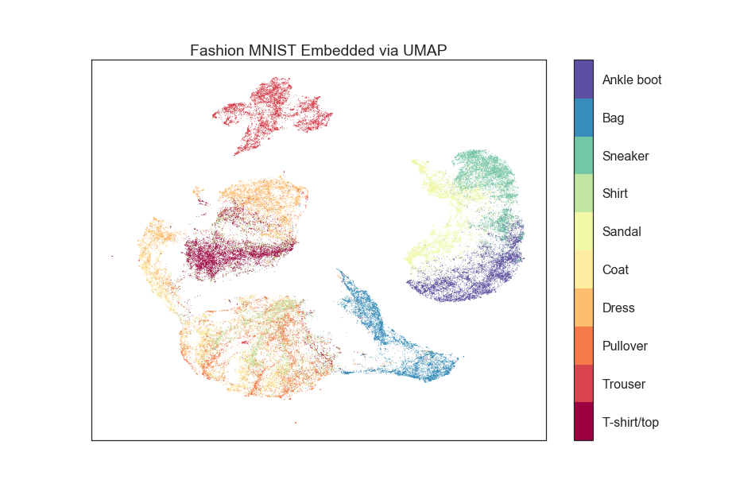

Dimensionality Reduction
What do you do if your data just is in more than 3d (or even 2d)

How does PCA work?
Intuition in 3d
Rotate the camera to a position that reveals the most information
Typical Use Case: Dimensionality Reduction


https://colab.research.google.com/github/djcordhose/data-viz/blob/master/notebooks/5-1-pca.ipynb
t-SNE
t-distributed stochastic neighbor embedding
Visualizing High Dimensional Data
Motivation
As humans looking at a computer screen we are naturally limited to two-dimensional visualizations that at best change over time and to reactions to interaction.
UMAP: Alternative to t-SNE
Searching for a low dimensional projection of the data that has the closest possible equivalent fuzzy topological structure (Riemannian manifold).

MNIST Digit Dataset

https://github.com/lmcinnes/umap
Fashion Items